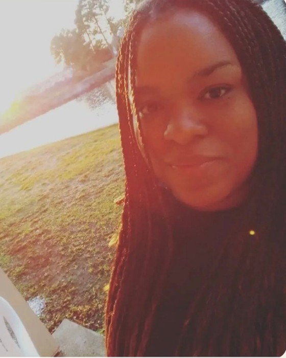

Hey there! I'm Amy, an award-winning writer with nearly two decades of experience in storytelling across multiple genres and formats.
Armed with an MFA in Creative Writing, I've worn many hats in the literary world — from screenwriter to ghostwriter to editor, and everything in between.
My journey as an author has been quite the adventure. In 2014, I took the plunge and self-published my first novel, American Specter: The Seven Sisters, under the pen name Rasheedah Prioleau. Since then, I've explored different genres and published under various names. You might have stumbled across my middle grade thriller Picture Day as Julia Dove, or my mafia romance as Krystal Silvers.
Previously, I was a Senior Story Director at Written Out Loud, where I guided young writers ages 8–18 through collaborative novel-writing projects using structured storytelling methods like the Hero's Journey. I also served as a Senior Editor at eGlobal Creative Publishing, where I managed romance authors and ghostwriters while adapting content for vertical film platforms like ReelShort and DramaWave.
When I'm not writing or editing, you'll find me binge-watching the latest series, getting lost in a good book, exploring new restaurants, or recharging at the beach with my toes in the sand.